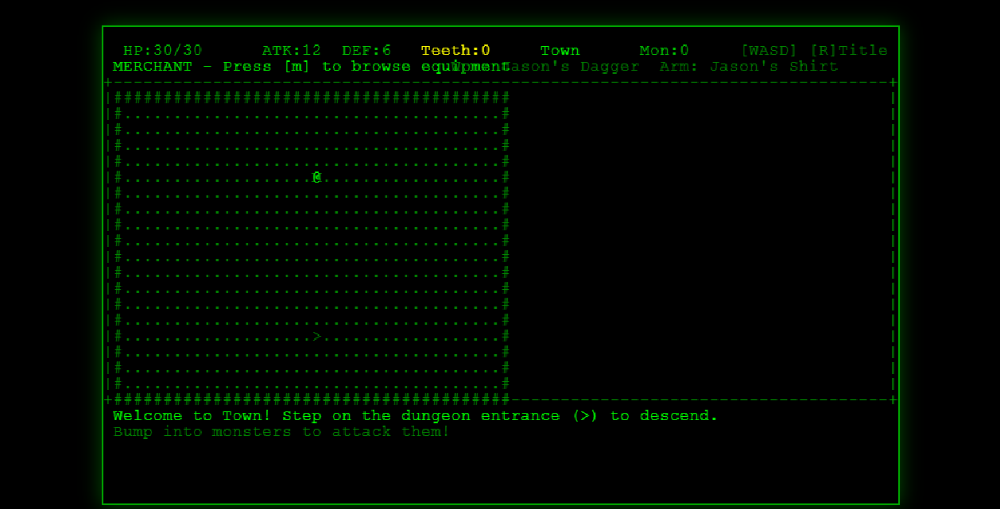
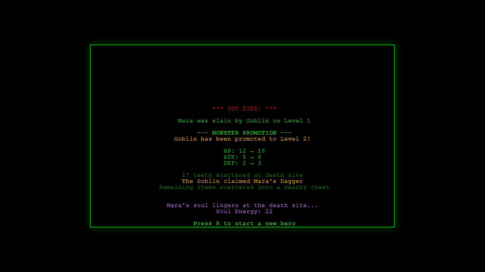
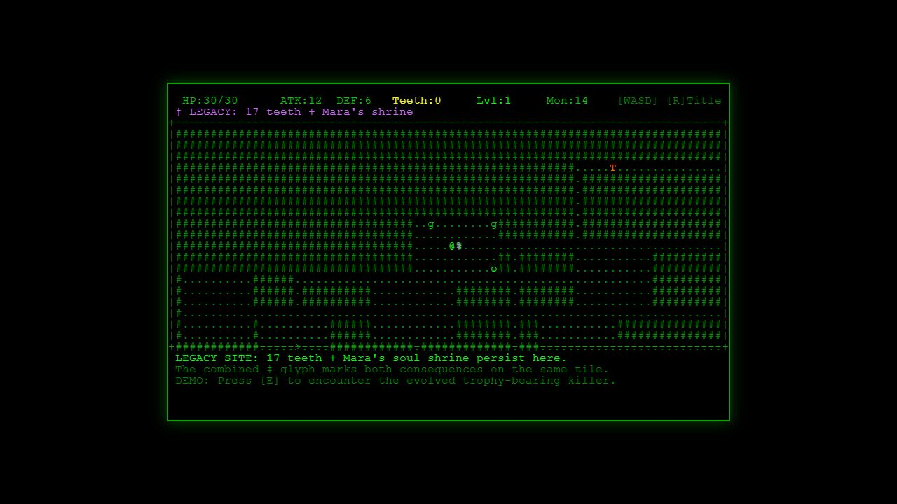
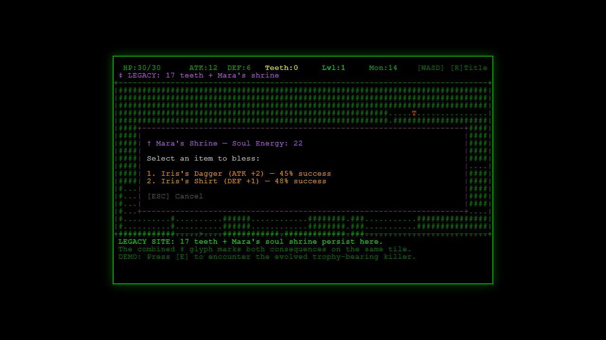
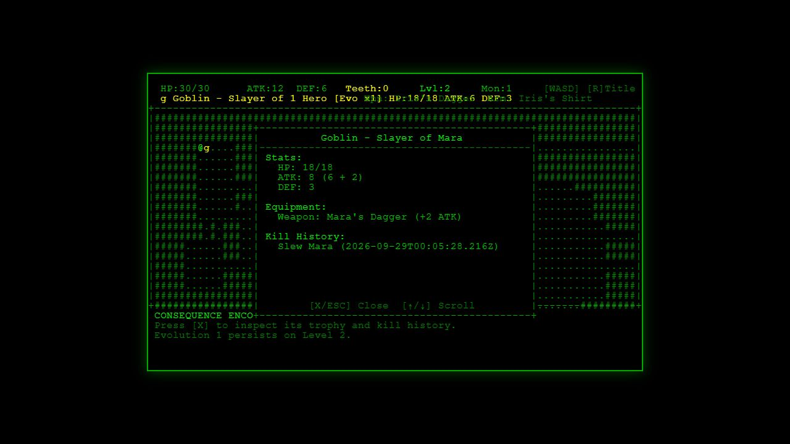

Playable foundation
Procedural dungeon levels, a town and merchant, movement, turn-based combat, equipment, inventory, status effects, statistics, and achievements.
Larn-like · Working title · Case study
Larn-like is a browser roguelike where a lost character does not simply disappear. The monster that killed them grows stronger, their equipment can change hands, and their death leaves resources and a shrine for whoever comes next.

The original idea
This project is inspired by Larn, the 1986 roguelike created by Noah Morgan. I was drawn to its compact, arcade-like structure and began imagining how that kind of roguelike could move in a different direction. Larn-like is a working title for this independent experiment. It is not presented as an official sequel, port, or continuation of the original game.
The first version of my idea was closer to an arcade game. A player would pay a very small amount to begin a hero. Death would be permanent, but the time spent playing would continue to matter.
A killer monster could take the hero’s equipment, become stronger, and move deeper into the dungeon. Teeth left at the death site could become currency. A shrine could give a future hero another way to use what the previous character had built.
The larger goal was to explore whether a game could create value with its players instead of only extracting money or attention from them. The payment and player-owned economy remain a design horizon. They are not part of the current prototype and have not been validated.
The bounded experiment
Before testing an economy, the game needed to prove that one player’s loss could create something meaningful for the next attempt.
The game records who died, where it happened, and which monster delivered the final blow.
The monster gains statistics, records the hero in its history, takes a trophy, and moves deeper.
Teeth, equipment, the promoted monster, and a soul shrine are stored in IndexedDB.
The next character starts fresh but enters a world changed by the heroes who came before.
What exists now
Procedural dungeon levels, a town and merchant, movement, turn-based combat, equipment, inventory, status effects, statistics, and achievements.
Generated levels, heroes, monsters, death events, teeth drops, shrines, and pending monster promotions are stored locally in a versioned IndexedDB database.
Killer monsters evolve and carry history forward. Death sites leave currency and shrines that future heroes can use to bless equipment.
The interface exposes evolved monsters, trophy equipment, world statistics, and the effects left behind by previous characters.
What the prototype proves today
The current prototype does not prove the larger player economy yet. It does demonstrate the central mechanism that makes that idea worth exploring.
A hero’s death becomes a persistent world event instead of disappearing when the run ends.
The monster evolves, records the fallen hero, takes a trophy, and moves deeper into the dungeon.
Teeth, equipment, and a soul shrine give future heroes something to discover and use.
A new character begins from scratch but enters a world shaped by previous attempts.
Verified walkthrough · local production build
This sequence follows one controlled run through the real persistence systems. Query-gated demonstration controls made the scenario reproducible; they are verification tools, not finished player-facing controls.




Supporting technical verification
The latest local review compiled the TypeScript projects, completed the production build, passed 764 local tests, and completed the full Mara-to-Iris browser walkthrough. Supabase-connected behavior remains a separate opt-in suite and was not reverified because dedicated test credentials were unavailable. The next proof is whether players understand and value the loop without demonstration controls.
How the idea is being tested
The project moves forward by turning the largest claim into a smaller question that can be built, observed, and challenged.
My role and AI assistance
I developed the original concept, including paid attempts, permanent death, evolving monsters, teeth as currency, and the belief that a player’s contribution should remain valuable after a character is gone.
I used Claude and Codex extensively to turn that direction into requirements, architecture, code, tests, and debugging work. My role has been to explain the system I want, decide what belongs in it, review what the tools produce, identify when the result does not match the idea, and keep narrowing the vision into something that can be tested.
The next part of owning this project is not hiding that process. It is improving my understanding of the implementation, testing the visible behavior, and being able to explain why the system works the way it does.
What comes next
The goal is not only to let players shape the world. It is to make the time, attention, and decisions they contribute matter beyond a single play session. A player’s actions could leave behind monsters, shrines, equipment, currency, and stories that other players can discover, use, trade, or build upon. The larger question is whether players can share in the value they help create instead of that value belonging entirely to the game or the company operating it.
The most important result so far is not that the full vision is finished. It is that the central idea now exists as a system that can be played, inspected, criticized, and improved.